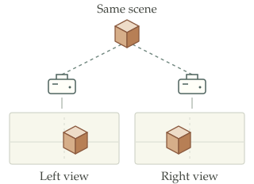

Yihan Wang (王羿涵)
I'm building physical intelligence at a stealth startup. I did research in geometric vision during my Ph.D. at PrincetonVL and my internship with Meta’s Surreal team. Previously, I received my B.Eng. from Tsinghua University (Yao Class).
Here are some of the projects I led:
- WAFT-Stereo (ECCV ’26): We built an efficient model that reconstructs metric 3D from high-resolution stereo image pairs

Two images of the same scene from slightly different viewpoints, like our two eyes. Comparing them helps estimate depth. at sub-pixel accuracy. The full training recipe is open source, and the model has been integrated into Meta XR, Project Aria, and AMETEK Creaform. - WAFT (ICLR ’26, Oral): We built a simpler and more accurate optical flow
 Optical flow describes the apparent 2D motion of pixels between consecutive video frames. Arrows show the direction and distance of that motion. estimator using high-resolution feature warping. The model has been integrated into Adobe After Effects. Learn more here.
Optical flow describes the apparent 2D motion of pixels between consecutive video frames. Arrows show the direction and distance of that motion. estimator using high-resolution feature warping. The model has been integrated into Adobe After Effects. Learn more here. - SEA-RAFT (ECCV ’24, Best Paper Finalist): We built a highly efficient optical flow estimator with strong generalization. The model has been used in the iPhone camera image signal processing (ISP) pipeline.